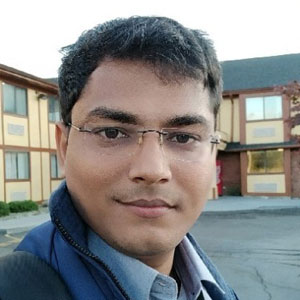

Dhruv Saidava
Maker @ Tinkering India
Reaching Unreached : Creating Enablers Among Underprivileged Communities for Achieving SDG Goals
As an educator, researcher, and social entrepreneur, I have always been passionate about creating positive change in society, particularly among underprivileged communities. My journey began with a personal experience of limited access to educational resources and opportunities. This inspired me to work towards creating a more inclusive and accessible education system for all, regardless of their background or socioeconomic status.
In this article, I want to highlight the importance of quality education, gender equality, and partnership for achieving the Sustainable Development Goals (SDGs). These three goals are crucial to creating enablers among underprivileged communities for achieving SDG goals and creating a positive impact on society.
Quality education is the foundation of a sustainable future. It empowers individuals to acquire knowledge, skills, and values that are essential for personal and societal development. By prioritizing quality education, we can create a more equitable and just society, where everyone has access to the same opportunities and resources.

Gender equality is another critical component of creating enablers among underprivileged communities. It ensures that women and girls have equal access to education, healthcare, and employment opportunities. Gender equality is not just a human rights issue, but it is also essential for achieving sustainable development.
Partnership for goals is the third component that is essential for creating enablers among underprivileged communities. It recognizes the importance of collaboration and collective action in achieving the SDGs. By partnering with governments, civil society organizations, and the private sector, we can create sustainable solutions that have a positive impact on society.
I strongly believe that by prioritizing quality education, gender equality, and partnership for goals, we can create enablers among underprivileged communities and achieve the SDGs. It is not just about creating a better future for ourselves but also about creating a more just and equitable society for everyone.
As a founder of Tinkering India and co-founder of Prayatna Charitable Trust, I am committed to creating scalable approaches for reaching remote communities with quality education and digital literacy. I have been designing new frameworks and systems, and I feel a strong need for mentorship, new examples, and communities to move ahead with better effectiveness in my journey.
I urge all individuals, organizations, and governments to prioritize quality education, gender equality, and partnership for goals to achieve the SDGs and create a more equitable and sustainable future. Together, we can create enablers among underprivileged communities and make a positive impact on society.
Home • Resume • Publications • CV (Web) • Credits